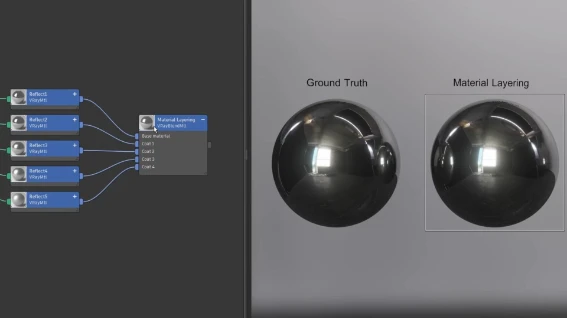

ILMのジェネラリストLucas Piazzini氏による解説動画。映画『アイアンマン』のCGスーツに見られる「反射のテールオフ」に着目し、金属表面の微細な傷が複雑な反射を生む物理的な仕組みを顕微鏡写真で示したうえで、マテリアルレイヤリング・クリアコート・GGXといった再現方法をV-Ray、Blender（Cycles）、Arnoldで比較している。
Lucas Piazzini「Forgotten Metal Knowledge | Vray, Cycles, Arnold..」（YouTube）
https://www.youtube.com/watch?v=uz8PIi3ELJg
CGWORLD.jp の紹介記事
https://cgworld.jp/flashnews/01-202608-MetalKnowledge.html
Lucas Piazzini氏のArtStation
https://www.artstation.com/lucaspiazzini